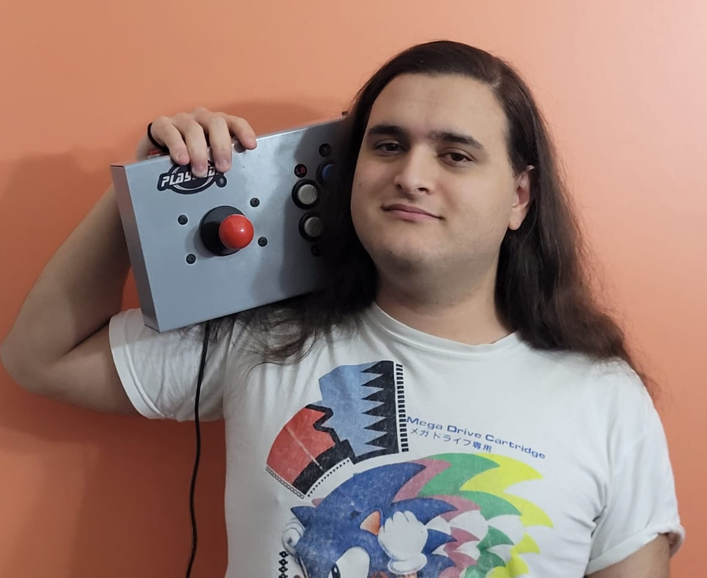

<div class="content">
    <div class="slice-box-container">
        <h1>Juan Pablo Lamas</h1>

        <p>Estudiante en la UTN Facultad Regional de Avellaneda en la carrera de Tecnico Universitario en Programación.<br>
            Desarrollador backend Jr. en Boreal Solutions.<br>
            Desarrollador de juegos cuando hay tiempo. Sean digitales o fisicos<br>
            C1 en Ingles<br>
            Fanatico de las tecnologias mas viejas que yo.<br>
        </p>
        <h1>Juego personalizado: Black Jack</h1>
        <p>El juego consiste en acercarse lo mas posible a 21 puntos con tus cartas sin pasarte.<br>
            El croupier  te da dos cartas, el obtiene una. Cuando inicia tu turno puedes o pedir otra carta o "plantarte" y terminar tu turno.<br>
            El valor de tu mano es dado por los numeros en las cartas. K, Q y J valen 10 puntos. A vale 1 o 11 dependiendo del puntaje actual.<br>
            En el caso de que la mano inicial de uno de los jugadores sea 21 (A + 10), se le dara la victoria inmediatamente y se iniciará una nueva ronda.<br>
            En el juego original se darían apuestas despues de repartir las cartas. En esta versión se juegan 10 rondas y se le da un punto al ganador de la ronda. Sea por tener mas puntos o porque su oponente superó 21.<br>
            En caso de empate, gana el croupier.
        </p>
    </div>
    
</div>